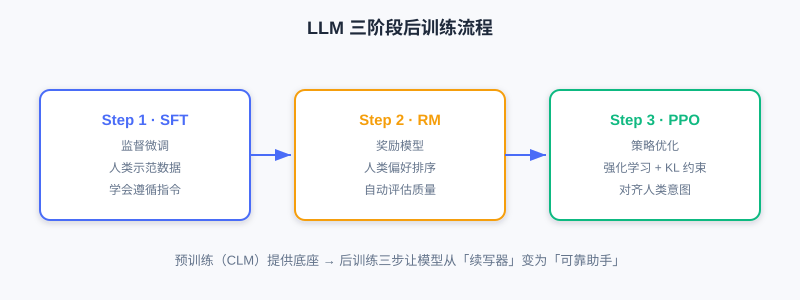
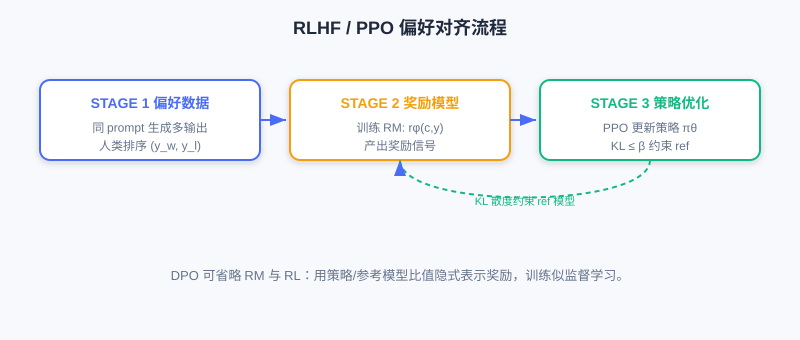

大语言模型（LLM）基础
📝 Before You Continue: 建议先读完 6.2 的 Decoder-Only 架构与自注意力机制。本节聚焦「LLM 怎么训练出来的」，为后续把这套流程迁移到推荐打基础。
从 Transformer 到 LLM 的演进，不只是参数规模的增长，更重要的是训练范式的系统化。现代 LLM（GPT-3/4、LLaMA 等）发展出一套完整的「预训练—指令微调—偏好对齐」三阶段训练流程，让模型既能生成流畅文本，又能理解指令、遵循人类意图。
但把 LLM 用到推荐，并非简单「套用」现成语言模型，而要理解其建模原理、针对推荐场景做改造优化。本节系统介绍 LLM 建模基本流程，重点放在与生成式推荐紧密相关的技术环节。
读完本章，你将能够：
- 解释 LLM 三阶段范式（预训练/指令微调/偏好对齐）各自的目标与损失
- 区分 RLHF（含奖励模型与 PPO）与 DPO 的流程差异
- 说明 Scaling Law 与涌现能力对生成式推荐的启示
- 把三阶段范式映射到推荐场景，并指出物品 Token 化等特有挑战
- 完成 4 道分层练习题，巩固 LLM→推荐的知识链条
6.3.0 LLM 三阶段范式总览
当前主流 LLM 遵循「预训练—指令微调—偏好对齐」三阶段范式，最早在 InstructGPT 系统化，被 GPT-4、Claude、LLaMA 广泛采用。三者目标递进，共同构成完整的能力构建体系。

- Step 1（SFT）：收集人类示范数据做监督微调，让模型初步学会遵循指令。
- Step 2（RM）：收集对比数据训练奖励模型，自动评估输出质量。
- Step 3（PPO）：以奖励模型为反馈，用强化学习持续优化生成策略，并以 KL 散度约束防止偏离参考模型过远。
🧠 Mental Model: 从「续写器」到「助手」
预训练后的 LLM 只是个「文本续写器」——给它一段开头，它自然往下写，但不懂「你要它做什么」。指令微调像上岗培训（教它理解任务指令）；偏好对齐像价值观校准（教它什么是更好的回答）。三步之后，它才从「补全工具」变成「可靠助手」。
6.3.1 预训练与指令微调
预训练：语言能力基础
预训练（Pre-training） 是第一阶段，也是最耗算力的阶段。目标是在大规模无标注文本上学习通用语言表示与生成能力，完全依赖自监督学习（数据自身构造信号，无需人工标注）。
训练目标：因果语言建模（CLM），也称下一个 token 预测（Next Token Prediction）：
其中 。模型最大化该似然，掌握语言统计规律、语法、语义乃至常识推理。
当模型规模与数据规模达到一定程度，会涌现 Scaling Law（规模化效应）：性能随参数量、数据量、计算量持续提升，甚至出现零样本/少样本等涌现能力（Emergent Abilities）。
Analysis: 现代 LLM 多为 Decoder-Only 架构（GPT/LLaMA），简洁高效、适合大规模训练。参数从数十亿到数万亿（GPT-3 175B、PaLM 540B、LLaMA-2 7B–70B、GPT-4 估计超 1T）。预训练需数千到数万 GPU/TPU、数周至数月，成本极高——多数团队直接在开源预训练模型（LLaMA、Mistral）上微调。
指令微调：遵循指令
预训练模型只会「文本补全」，不等于「理解并执行指令」。指令微调（Instruction Tuning） 又称监督微调（SFT），解决「让模型理解任务指令并按要求生成」。
核心是构造「指令—输入—输出」三元组，例如：
指令：总结下面这段文字的主要内容。
输入：[一段关于人工智能发展历史的文字]
输出：[人工智能从1950年代……经历了多个发展阶段……]
训练目标：条件语言建模损失，仅对输出部分计算：
其中 是条件信息（指令+输入）， 是目标输出。关键：损失只在输出 token 上算，指令与输入不参与梯度更新。可采用全参数微调或参数高效方法（如 LoRA）。经 SFT 的模型在零样本/少样本任务上显著超越纯预训练模型——它学会了「理解指令」这一元能力。
6.3.2 偏好对齐与从 LLM 到推荐
偏好对齐：RLHF 与 DPO
即便经指令微调，LLM 输出仍可能有用性不足、幻觉、安全风险。根源是 SFT 只学「人类会怎么答」，未优化「什么回答更好」。偏好对齐（Preference Alignment） 让输出更符合人类价值观与偏好。
RLHF（基于人类反馈的强化学习） 三步走：
- 收集偏好数据：同一 prompt 让模型生成多个输出，人类标注者排序，得偏好对 （ chosen， rejected）。
- 训练奖励模型（RM）：
- 策略优化（PPO）：最大化奖励、同时用 KL 散度约束防偏离参考模型：

DPO（直接偏好优化） 更简洁：核心思想是「奖励模型可用策略模型自身隐式表示」，无需显式训练 RM、无需强化学习：
DPO 训练类似监督学习，简单稳定，效果常媲美甚至超越 RLHF，近期被广泛采用。
三阶段范式向推荐映射
LLM 的三阶段为推荐提供完整能力框架，但每阶段都需重新定位：
| LLM 阶段 | 推荐适配方向 | 核心挑战 |
|---|---|---|
| 预训练 | 用户行为序列预训练、多模态内容预训练 | 如何表示物品？如何平衡语言能力与推荐能力？ |
| 指令微调 | 推荐任务指令化、多任务联合训练 | 如何设计推荐指令？如何处理 ID 化物品？ |
| 偏好对齐 | 隐式反馈对齐、业务指标优化 | 如何构造偏好数据？如何平衡多目标？ |
- 预训练：核心是「让模型同时掌握语言理解与推荐建模」。过度强调语言会忽视协同信号，过度聚焦行为会削弱语义——需权衡：内容型物品（新闻/视频）语言能力更重要，协同丰富型（电商/音乐）行为建模更重要。
- 指令微调：难点是物品以 ID 形式存在，对语言模型是完全陌生符号。必须把这些 ID「翻译」成模型能懂的语义表示——这正是 物品 Token 化 的核心，也是连接传统推荐数据与生成式模型的关键桥梁（见 6.4）。
- 偏好对齐：推荐反馈多为隐式（点击、时长、跳过），目标常多维度（点击率、留存、生态健康）。如何从隐式反馈构造有效偏好信号、在多重指标间权衡，比 LLM 更微妙。
推荐场景的特殊挑战
除三阶段适配，生成式推荐还要直面 LLM 领域少有的四类挑战：
- 物品 Token 化：自然语言 token 自带语义，推荐物品 ID 是抽象数字、对模型无意义。如何注入语义、刻画 ID 间相似？—— 第 6.4 节核心议题。
- 协同信号融合：「买 A 的用户也买 B」无法从文本描述获得，需精心设计把协同信号注入生成式架构。
- 冷启动：新物品/新用户缺乏交互，生成式可借 LLM 语义理解从内容特征快速建立能力，但需培养模型「有交互靠协同、无交互靠内容」的自适应切换。
- 实时性：在线服务常要求数十毫秒内完成；自回归逐 token 生成延迟可能数百毫秒。需推理优化（量化、KV Cache、推测解码）与系统级创新（混合架构、离在线结合、缓存）。
💡 Key Insight: 生成式推荐不是「把语言模型套到推荐上」，而是把推荐问题重新概念化为序列生成问题，并针对推荐独特性深度适配。它借鉴 LLM 成功范式，又创造性解决推荐特有挑战——这串知识链正是后续章节（Scaling 架构、端到端生成、会思考的推荐、扩散模型）的基础。
⚠️ Common Mistakes in 6.3
| # | Mistake | Example | Why It's Wrong | Fix |
|---|---|---|---|---|
| 1 | 把 SFT 损失算在全部 token 上 | 指令也参与梯度 | SFT 只对输出算损失，输入/指令是条件 | 损失仅在 上 |
| 2 | 以为 RLHF 不需要参考模型 | 直接最大化奖励 | 易「欺骗」奖励模型、质量退化 | 加 KL 约束到 |
| 3 | 混淆 RLHF 与 DPO 复杂度 | 「两者都要训奖励模型」 | DPO 隐式表示奖励，无需显式 RM/RL | DPO 训练似监督学习 |
| 4 | 直接套用 LLM 词表到物品 | 「用现成 tokenizer 编码商品」 | 物品 ID 对 LLM 是陌生符号 | 需物品 Token 化（见 6.4） |
| 5 | 忽视推荐偏好对齐的多目标 | 「用点击率当奖励就行」 | 隐式反馈+多目标需精细构造 | 显式处理多目标与隐式信号 |
本章小结
📌 Key Takeaways
| Concept | Key Points | Why It Matters |
|---|---|---|
| 预训练 CLM | 通用生成能力基础，Scaling Law 涌现 | |
| 指令微调 SFT | 条件语言建模，仅输出算损失 | 从「补全」到「遵循指令」 |
| RLHF | RM + PPO + KL 约束 | 价值观对齐，但流程复杂 |
| DPO | 隐式奖励，似监督训练 | 简单稳定，近期主流 |
| 推荐映射 | 三阶段→行为预训练/任务指令化/隐式对齐 | 每阶段需重新定位 |
| 四类挑战 | Token 化/协同/冷启动/实时性 | 决定能否从研究走向落地 |
❓ FAQ
Q1: DPO 为什么比 RLHF 更简单却常更有效？
A: DPO 把「训练奖励模型 + 强化学习」合并为一步——奖励由策略与参考模型的比值隐式表示，训练像普通监督学习，避免了 RL 的不稳定与额外 RM。
Q2: 推荐里为什么偏好对齐更难？
A: LLM 有显式人类偏好排序；推荐的反馈多为隐式行为（点击/跳过），目标多维且常冲突，构造「什么是更好」的信号更微妙。
Q3: Scaling Law 对推荐意味着什么？
A: 与 LLM 类似，生成式推荐模型的性能随参数/数据/算力提升而持续提升，这正支撑了 [6.2] 中「堆叠即规模化」与后续 Scaling 章节。
🔗 前后关联
- 6.2（架构基础）的 Decoder-Only 正是 LLM 预训练的主架构。
- 6.4（Codebook 量化）解决本节反复提及的「物品 Token 化」桥梁问题。
- 8.x（端到端生成）落地三阶段范式到推荐的训练管线。
- 9.x（会思考的推荐）深化偏好对齐与推理式生成的结合。
Practice Problems
Work through all problems in order — they get progressively harder. Each has a complete solution you can reveal after trying it yourself.
Problem 6.3.1 — SFT 损失范围 🟢 Easy
指令微调样本：指令「翻译为英文」、输入「你好世界」、输出「Hello world」。若输出分词为 2 个 token，训练时损失应覆盖哪些 token？指令与输入 token 是否参与梯度更新？
💡 Solution (click to reveal)
答： 损失仅覆盖输出 token Hello 与 world（2 个），逐位算 。指令「翻译为英文」与输入「你好世界」作为条件 不参与梯度更新——模型只学「给定指令+输入，如何生成正确输出」。
Key points:
- 条件语言建模：条件固定，仅输出算损失。
- 这是 SFT 与预训练 CLM 的关键区别。
Problem 6.3.2 — 奖励模型损失 🟢 Easy
偏好对 ，奖励模型给出 。写出 RM 损失项 的计算，并说明它鼓励什么。
💡 Solution (click to reveal)
Approach: 代入。
；；损失项 。
答： 该损失小（接近 0）说明奖励模型已正确给 更高分。RM 损失整体鼓励「对更优输出给更高奖励分」，使 RM 能自动评估任意输出质量。
Key points:
- 把分差压成概率。
- RM 学的是「相对优劣」而非绝对分数。
Problem 6.3.3 — RLHF vs DPO 🟡 Medium
简述 RLHF 与 DPO 在「是否需要显式奖励模型」「是否使用强化学习」「训练稳定性」三方面的差异。
💡 Solution (click to reveal)
答：
| 维度 | RLHF | DPO |
|---|---|---|
| 显式奖励模型 | 需要（单独训 RM） | 不需要（策略与参考模型比值隐式表示奖励） |
| 是否用 RL | 用 PPO 强化学习 | 不用，训练似监督学习 |
| 训练稳定性 | 较低（RL 易不稳、易骗 RM） | 较高（无 RL、无独立 RM） |
Key points:
- DPO 用参考模型 替代 RM + RL。
- DPO 近期更受青睐，因简单稳定且效果可比。
🏆 Challenge: 推荐偏好对齐设计
某音乐 App 想用偏好对齐优化推荐，但其只有隐式信号（播放完成率、收藏、跳过）。请写约 150 字说明：如何从隐式行为构造偏好对 ？需兼顾哪些业务目标（至少列 2 个）？并点明与 LLM 显式排序的本质差异。
💡 Hint
构造：对同一用户同一上下文生成多个候选序列，用隐式信号定义优劣——如完成率高且收藏的 ，跳过多/完成率低的 。兼顾目标：用户留存、内容生态健康（多样性/长尾）。本质差异：LLM 有人类显式排序，推荐靠行为 proxies 推断偏好，噪声大、且多目标常冲突需加权，非单纯「好坏二分类」。